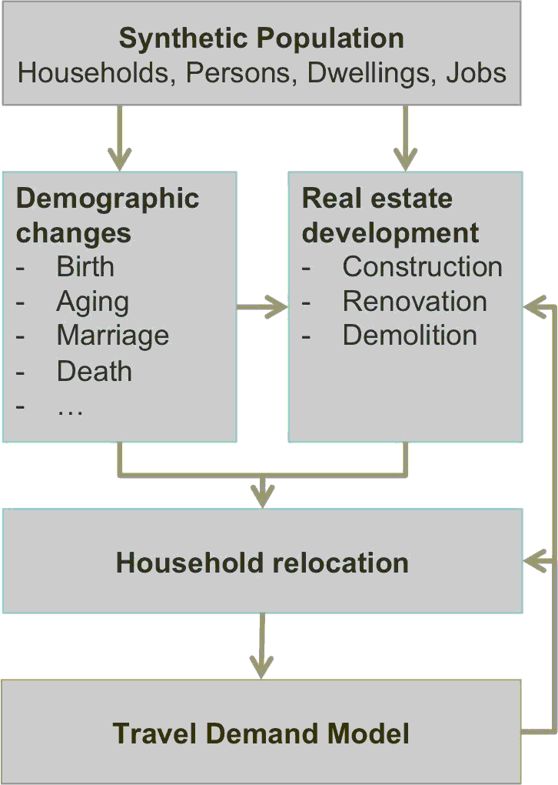

SILO has been designed to work with minimal data requirements. In contrast to other large-scale land-use models, SILO only relies on data that are publicly available (at least that is true in the U.S.). The most important local input data are PUMS (Public Use Microdata Sample) files that can be downloaded from the Census Bureau website.
Required local data include zonal population and employment. Information on local land use is desirable but may be substituted by publicly available land-cover data that can be downloaded from the USGS website.

SILO is designed to be closely integrated with a travel demand model.